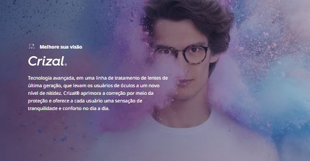
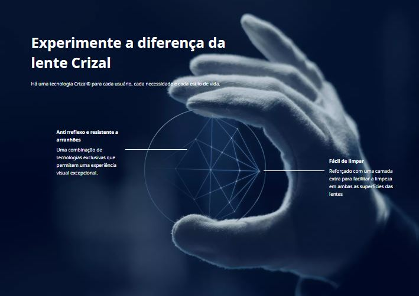

Tratamentos
Tecnologia a serviço da visão
Tecnologia a serviço da visão


Tecnologia avançada, em uma linha de tratamento de lentes de última geração, que levam os usuários de óculos a um novo nível de nitidez. Crizal® aprimora a correção por meio da proteção e oferece a cada usuário uma sensação de tranquilidade e conforto no dia a dia.
Há uma tecnologia Crizal® para cada usuário, cada necessidade e cada estilo de vida.
As lentes com antirreflexo Crizal oferecem uma visão mais confortável para todos os estilos de vida. As tecnologias que compõem as lentes Crizal proporcionam nitidez e proteção contra os inimigos da visão.
 Uma combinação de tecnologias exclusivas que permitem uma experiência visual excepcional.
Reforçado com uma camada extra para facilitar a limpeza em ambas as superfícies das lentes.

Proteção UV na face interna e externa da lente.
Resistente a manchas, repelente à água e a poeira.
Torne suas lentes resistentes a arranhões.
Redução dos reflexos de luz que atrapalham a rotina.
Ótica Florença - CNPJ: 23.398.421/0001-18
Resp. Técnico - Mariano Guglielmi